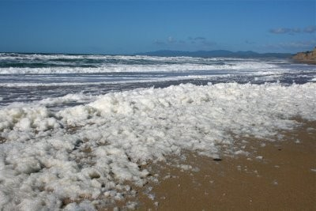

Marine Ecosystem Modelling (ECOMOD)
ECOMOD is an interdisciplinary team composed of scientists with diverse backgrounds (mechanical engineer, bioengineer, oceanographers, mathematicians, physicists, evolutionary biologist), and expertise in hydrodynamics, sediment transport, biogeochemistry, ecosystem modelling, biophysical modelling, and Individual-Based Modelling.
ECOMOD is part of the ECODAM (Ecosystems, data processing and modelling) group of the Operational Directorate Natural Environment (OD Nature) within the Institute of Natural Sciences.
Our vision
Our mission
Improve scientific knowledge in marine ecosystems through interdisciplinary research
Support and advise stakeholders
Disseminate science and raise public awareness
Develop open-source numerical models and community tools
Manage RBINS’ Research Infrastructure COHERENS
Modelling tools
To achieve our goals, we are developing and using different types of models (hydrodynamics, sediments, biogeochemical, particle transport, contaminants), codes and softwares:
- ECOMOD is responsible for the development, upgrading and maintenance of the RBINS Research Infrastructure COHERENS modelling system, which is publicly available.
ECOMOD also developed codes and softwares that are publicly available:
- Demeter: The Multiscale biogeomorphic modeling framework
- TidalGeoPro: A Python package to analyze geometric and hydraulic properties of tidal channels
- VFC: A vegetation/Flow Convolution Python module
- UVPec: Underwater Vision Profiler Embedded Classifier
ECOMOD is using modelling tools such as Parcels, for particle tracking simulations.
Access to ECOMOD shared tools
Support, training and capacity building
The team provides support to users and is involved in capacity building activities through the CEBioS (Capacities for Biodiversity and Sustainable Development) program.

Modelling South China Sea and Ha Long Bay, Vietnam
Domains of expertise and applications
ECOMOD focuses on aquatic ecosystems and how these relate to societal matters and has a strong expertise in the development and use of marine ecosystems modelling tools to support the management of the marine environment, particularly for North Sea (Belgian waters), but also the Southern Ocean, Benin and Vietnam.
Examples of applications (not exhaustive):

Modelling eDNA transport is used to predict origin and dispersal of eDNA and hence provide a more realistic interpretation of eDNA data.
More details:
JPIO-PAGES - eDNA-OPTIMA - ZERO-IMPACT
Modelling biogeochemical particle interactions and feedback loops on the Belgian continental shelf.
More details:
BG-PART

Modelling the effect of nutrient riverine inputs on eutrophication and estimating the relative impact of different rivers on eutrophication at sea.
More details:
OSPAR_ICG-EMO - EMoSEM
Enhance the understanding and sustainable management of coastal aquatic resources in the Lake Nokoué-Cotonou Channel region.
More details:
SHRIMP-II
Understanding the extent of the impact of pollutants and the effects of human activity and climate change on water quality in Ha Long Bay.
More details:
CLIMDIS
ECOMOD’s expertise serves international bodies like the International Council for the Exploration of the Sea (ICES), the OSPAR Convention, the EuroGOOS Coastal Working Group and the UN Decade Collaborative Center Ocean Forecast.
More details in Activities
Contact
If you would like to:
- Learn more about our research activities – Explore our current projects, publications, and scientific contributions
- Utilize our research tools and methodologies – Access our datasets, protocols, and analytical frameworks
- Establish new research collaborations – Connect with our team to discuss joint projects and partnerships
Don’t hesitate to contact us!